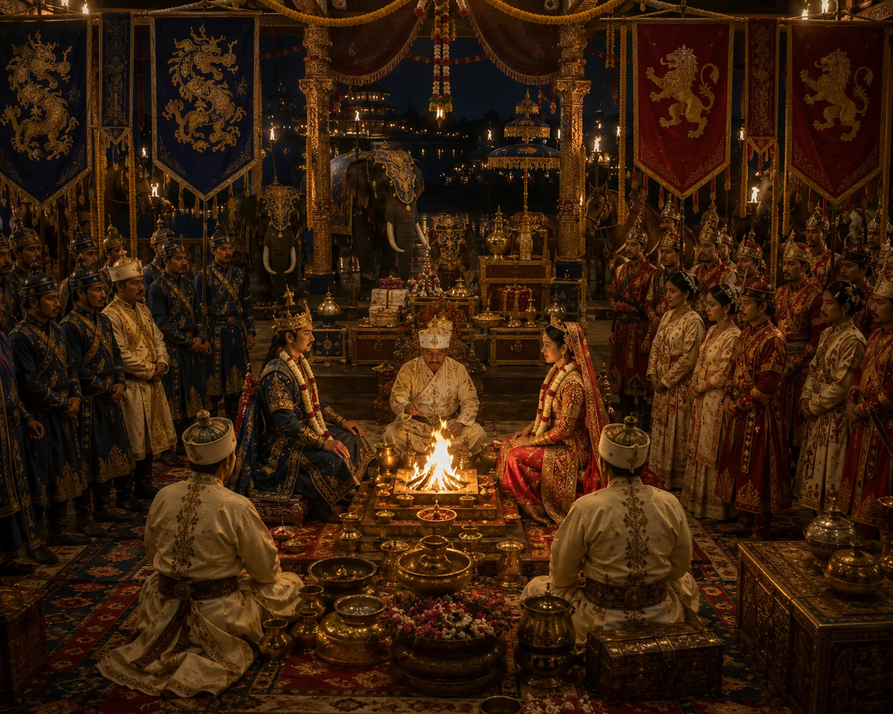

Ahom-Kamata Royal Matrimonial Treaty
c. 1308 · The coming of Sukaphaa

Peace concluded by the marriage of Kamata Princess Rajani (Durlabhanarayana's daughter) to Sukhangphaa, sealing durable inter-kingdom peace.
Wikipedia (Sukhaangphaa) dates the end of the war to 1324, against c. 1308 here; it names both princesses, Rajani and Bhajani.
People: Durlabhnarayan (Kamata), Rajani, Sukhaangphaa, Bhajani
Open this scene in the interactive archive · Follow this event on MAP